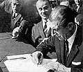

Reforma Agraria

A mediados del siglo XX, el campo chileno se caracterizaba por el latifundio: grandes haciendas donde los inquilinos trabajaban a cambio de vivienda, regalías y bajos salarios, y una producción que no alcanzaba a abastecer al país. Con el impulso de la Alianza para el Progreso de Estados Unidos, el gobierno de Jorge Alessandri dictó en 1962 la primera ley de reforma agraria, de alcance limitado. El gobierno de Eduardo Frei Montalva la profundizó con la Ley 16.640 de 1967, que permitió expropiar predios de gran tamaño o mal explotados, y con una ley de sindicalización campesina del mismo año. Bajo Salvador Allende, las expropiaciones se aceleraron y aumentaron las tomas de predios y los conflictos en el campo. La reforma transformó la estructura de la propiedad rural y la organización de los campesinos. Tras el Golpe de Estado de 1973, la dictadura revirtió parte del proceso: devolvió tierras a antiguos propietarios y asignó parcelas individuales, muchas de las cuales fueron vendidas después. El balance es debatido: para unos fue un acto de justicia social y modernización; para otros, una vulneración del derecho de propiedad que agravó la polarización.
Versión para niños
Hace unos sesenta años, en Chile muy pocas familias eran dueñas de la mayor parte de los campos. Los campesinos trabajaban la tierra, pero no eran sus dueños, y muchos vivían en la pobreza. Entre 1962 y 1973, varios gobiernos hicieron la Reforma Agraria: el Estado expropió, es decir, tomó por ley, grandes fundos para entregarlos a los campesinos. Fue un cambio enorme que generó esperanza en algunas personas y mucha preocupación en otras.
Para maestros
Nivel sugerido: 2° medio
Objetivo: Analizar las causas, el desarrollo y las consecuencias de la Reforma Agraria, considerando las perspectivas de los distintos actores involucrados.
Preguntas para la clase:
- ¿Cómo era la vida de un inquilino en una hacienda antes de la reforma?
- ¿Por qué la Reforma Agraria generó tanto apoyo y tanta oposición?
- ¿Qué cambios produjo en el campo chileno que todavía se pueden observar?
Actividad (20–30 min): Cada grupo representa a un actor (campesino, propietario agrícola, funcionario de gobierno) y explica cómo vivió la reforma a partir de fuentes de la época. El curso cierra identificando puntos de acuerdo y desacuerdo entre las perspectivas.
Fuentes sugeridas: Memoria Chilena; Biblioteca Nacional Digital; Museo Histórico Nacional.
Objetivos de Aprendizaje (Currículum Nacional)
- 8° básico · HI08 OA 13 Analizar el rol de la hacienda … el desarrollo de un sistema de inquilinaje … la proyección de estos elementos en los siglos XIX y XX
- 2° medio · HI2M OA 13 Analizar el Chile de la década de 1960 … las reformas estructurales y los proyectos excluyentes de la Democracia Cristiana ("revolución en libertad")
- 2° medio · HI2M OA 14 Analizar el ambiente de crisis a inicios de la década del 70 … los conflictos en torno a la reforma agraria, las estatizaciones y expropiaciones
Personajes
Revisión humana pendiente. Cómo se revisa · Reportar un error
Cómo citar: Historia de Chile. (2026). Reforma Agraria. En Historia de Chile: atlas y línea de tiempo. https://moises-salgado.github.io/historia-de-chile/momento/reforma-agraria.html